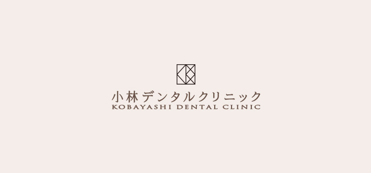

- ホーム
- 小児歯科
小児歯科診療Child
お子さまの成長をご家族とともに支えます

小児期は、お口の中が日々、大きく変化します。歯の生え変わりはもちろん、顎の骨や口腔周囲の筋肉の発育も急速に進んでいきます。そんな大切な時期に適切な診療を受けることで、お子さまの健やかな成長をサポートすることが可能となります。
お子さまを歯医者嫌いにさせないために
気持ちに寄り添った診療

当院では、お子さまが歯医者嫌いにならないよう、診療の端々にさまざまな工夫を凝らしています。むし歯が見つかってもいきなり歯を削るようなことはいたしません。まずは歯医者さんに慣れてもらうことから始め、治療の必要性も理解することができて初めて具体的な処置を実施します。歯医者さんに苦手意識を持ってしまうと、大人になってからも歯科から足が遠のいてしまいます。そうした事態を避けるためにも、お子さまの気持ちに寄り添った診療を心がけております。
キッズルームの完備

当院には、キッズルームが完備されておりますので、お子さま連れの方はお気軽にご利用ください。子どもが大好きなおもちゃや絵本などが設置されており、待ち時間を楽しく過ごすことができます。
保護者さまへのお願い
歯医者さんでの治療は、子どもにとって比較的負担の大きい経験となります。お口の中に大きな器具を入れられたり、歯を削られたりすることは、想像以上に怖いものです。それだけに、治療を頑張った後には保護者の方がしっかり褒めてあげてください。それがお子さまの成功体験となって、歯科治療を乗り切るための自信も身に付きます。
歯が生え変わる時期に要注意
生え変わりの時期はデリケート

大人の歯は、6歳くらいから生えてきますが、この時期にむし歯になるケースが極めて多いです。萌出途中の歯や安定しない歯並びは、清掃性が低下するためです。この時期に適切なケアを実施しなければ、永久歯列に大きな問題を抱えることとなります。
乳歯のむし歯を放置するリスク

“乳歯はいずれ永久歯に生え変わるから”という理由で、乳歯のむし歯を放置することは絶対にやめましょう。確かに乳歯はいずれすべてが抜け落ちますが、むし歯を放置すると永久歯の発育に悪影響が及ぼすことがあります。ケースによっては永久歯が生えてこないこともあるため、乳歯のむし歯は早期に治療することが望ましいです。
お子さまの将来の健康のために
むし歯になりにくい口内環境を作りましょう

生まれて間もない赤ちゃんのお口の中には、むし歯菌が存在していません。それにもかかわらず、多くの子どもはむし歯にかかります。それは成長する過程で、むし歯菌に感染するからです。子どものむし歯菌への主な感染源は、ご家族だといわれています。食べ物を口移しで与えたり、キスなどのスキンシップをしたりする際に、大人から子どもへとむし歯菌が感染するのです。その点も踏まえて、むし歯菌からお子さまを守る取り組みを実施していきましょう。
むし歯からお子さまを守るためのポイント
感染源の除去
まずはご家族のむし歯予防から始めましょう。今現在、むし歯がある方は、早急に治療をする必要があります。周囲の大人の口腔衛生が向上すれば、お子さまのむし歯リスクも大きく減少します。
感染経路の遮断
むし歯菌は、エネルギー源となる糖質がなければ、活動することができません。キシリトールは、むし歯菌のエネルギー源とならないだけでなく、その活動を抑制する働きが期待できます。また、1歳半から2歳半の時期は、とくにむし歯のリスクが上昇するため、その期間だけスキンシップ等を控えるようにしましょう。
抵抗力の強化
フッ素塗布やシーラントなどの実施することで、むし歯菌への抵抗力を高めることができます。歯磨き指導も受けて、正しい口腔ケアを実施できるようにしましょう。
歯並びの乱れは予防できます

歯並びやかみ合わせの異常は、小児期の矯正治療で予防することが可能です。発育期に適切な矯正治療を受けることで、顎骨の発育を正常に促せるからです。当院ではさまざまな小児矯正に対応しておりますので、お子さまの歯並びの乱れを治したい、予防したいという方は、お気軽にご相談ください。